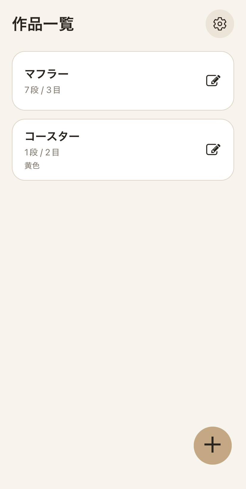
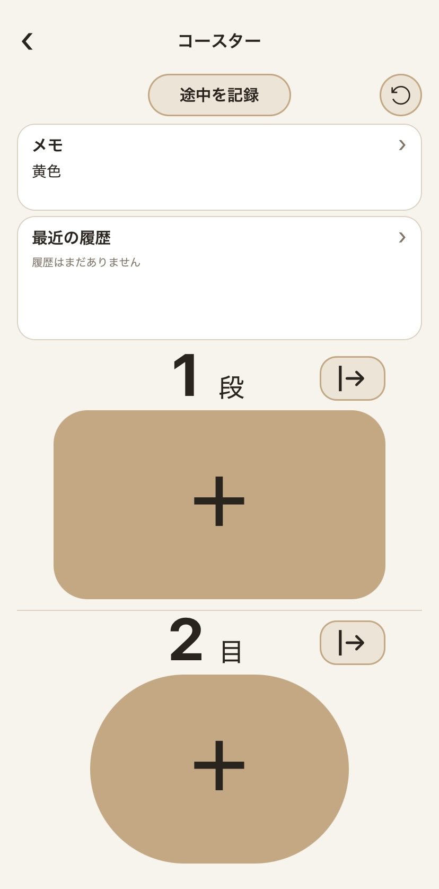
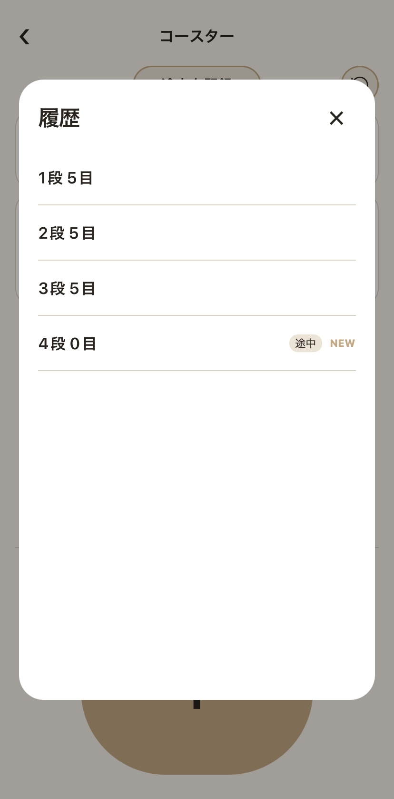
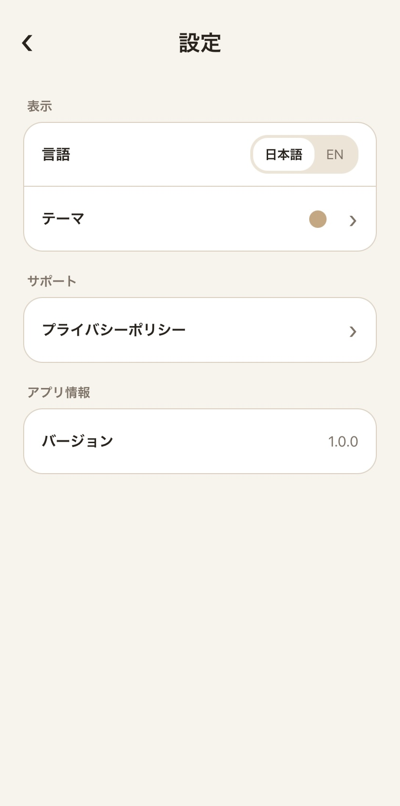

HOW TO USE
使い方
作品を作って、編んだ分だけ＋を押す。Knit Markの基本操作を順番に説明します。

作品を作る
作品一覧の＋から新しい作品を作ります。作品ごとにカウント、履歴、メモが保存されます。無料版では最大5作品まで登録できます。

段と目を数える
編んだら大きな＋を押します。目の＋は1目ずつ、段の＋は1段ずつ進みます。段を進めると目数は0に戻ります。
区切りをつける
段 │→
現在の段と目を履歴に残し、段と目の両方を0に戻します。パーツや模様の区切りに使えます。
目 │→
現在の目数を履歴に残し、目だけ0に戻します。段数はそのままです。

途中を記録する
一度手を止めたいときは「途中を記録」を押します。今の段と目を変えずに、履歴へ途中の印を残せます。編み進めて正式な履歴が追加されると、途中の印は整理されます。
間違えたらUndo
↶ を押すと、直前の操作を元に戻せます。カウントだけでなく、履歴が追加された操作も順番に戻せます。

履歴を見る
最近の履歴はカウンター画面ですぐ確認できます。全履歴を開くと、これまで記録した段・目・途中の位置をまとめて確認できます。
メモを残す
作品ごとにメモを残せます。針の号数、毛糸、次に編む場所など、続きから始めるときに必要な情報を書いておけます。

テーマと操作音を変える
設定からテーマカラーを変更できます。操作音はON / OFFを切り替えられます。言語も日本語と英語に切り替えられます。

横向きでも使う
iPhone / iPadは横向きにも対応しています。大きな＋ボタンを押しやすい配置なので、手が編み物でふさがっているときは足で操作する使い方もできます。